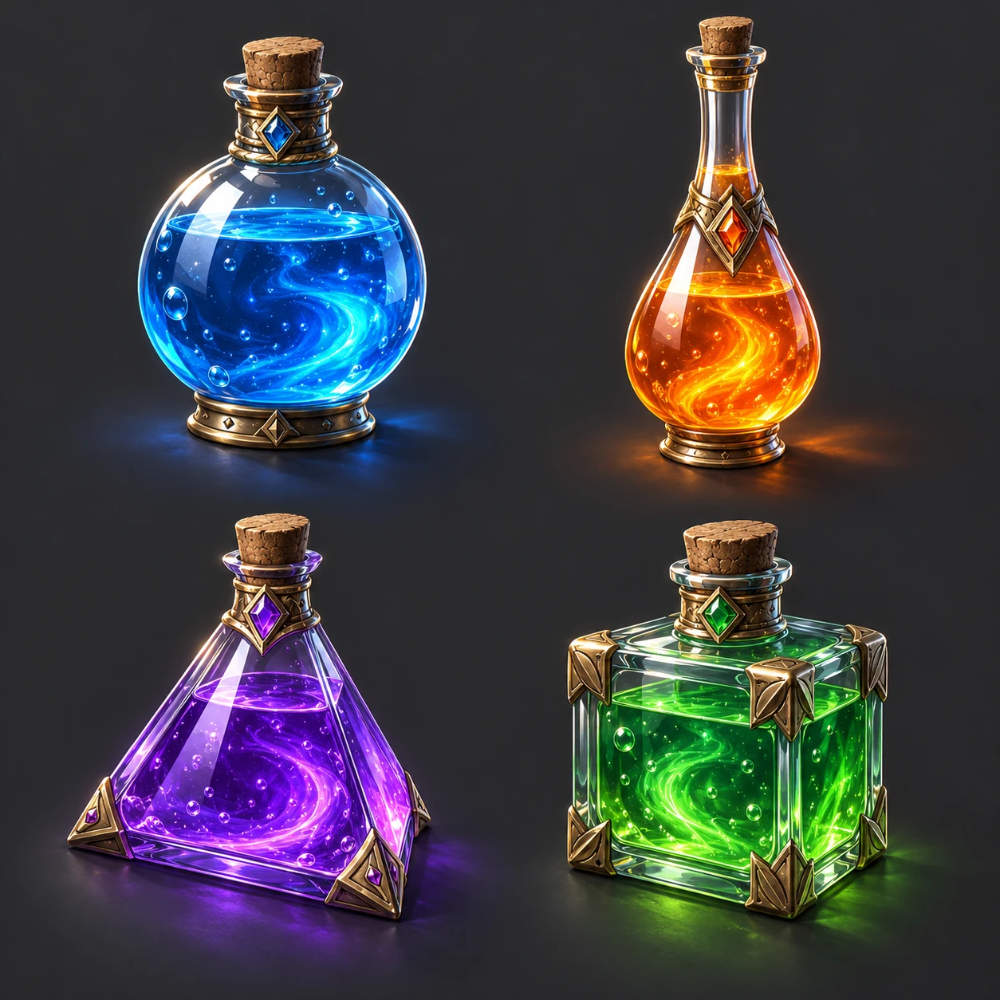

NB037 / game
Potion inventory icons
药水道具图标组
Suggested frame: 1:1 · Mode: generate · Target: Nano Banana 2.1

Target-model test pending. Any preview on this page is an original imagegen illustration, not evidence of Nano Banana output. No reference image required.
English prompt
Use case: Potion inventory icons. Target aspect ratio: 1:1. Four separate fantasy potion bottles in a 2×2 grid: round, long-necked, triangular and square, with blue, orange, violet and green liquid. Solid dark gray background, consistent three-quarter angle and rim lighting. Text requirement: No text. No other lettering, watermark or signature. Maintain clear visual hierarchy, useful negative space and consistent light direction. Do not add unrequested objects. Deliver one finished image.
中文提示词
用途：药水道具图标组。目标画幅：1:1。
四个独立幻想药水瓶以2×2排布，分别为圆瓶、长颈瓶、三角瓶和方瓶，液体为蓝、橙、紫、绿，深灰纯色背景，统一三分之四视角和边缘光。
文字要求：无文字。除指定文字外不添加任何文字、水印或签名。
构图保持清晰层级、合理留白和统一光源。不要添加未要求的物件。输出单张完成图。Quality review
Exactly four icons, liquid inside glass; solid background is not transparency.
严格四个道具，液体不穿过玻璃边界；纯色底并非透明。
How to iterate
Set aspect ratio and resolution in your image client. Start at 1K. Fix one failed criterion at a time while preserving everything else; restart from your original reference if identity drifts.